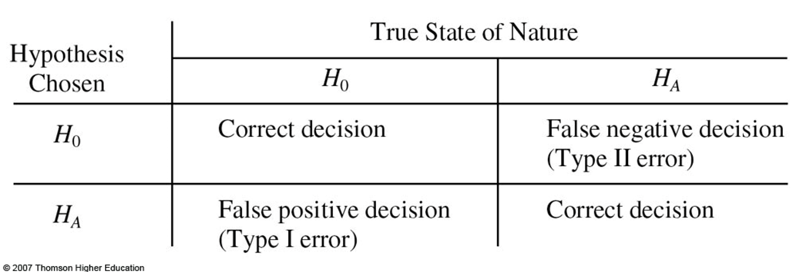
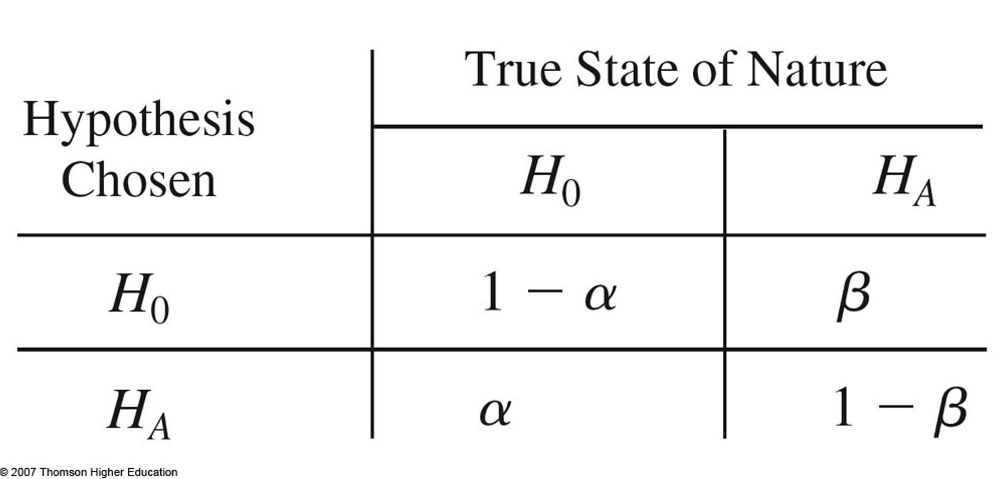
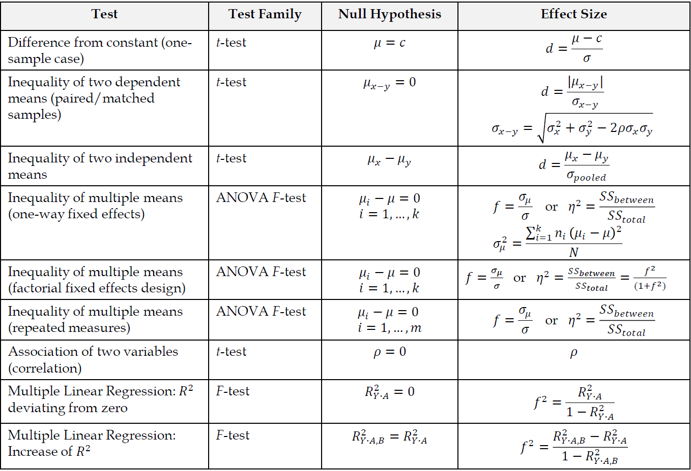
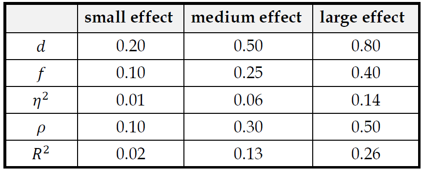
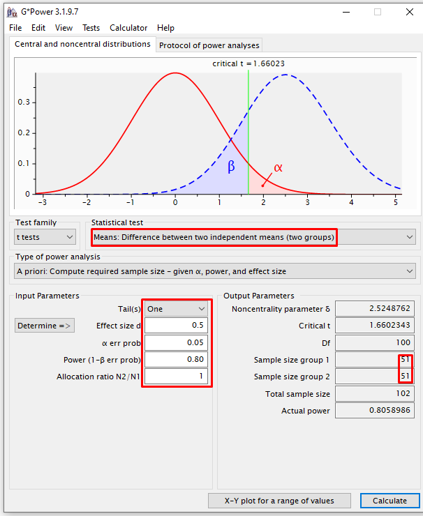
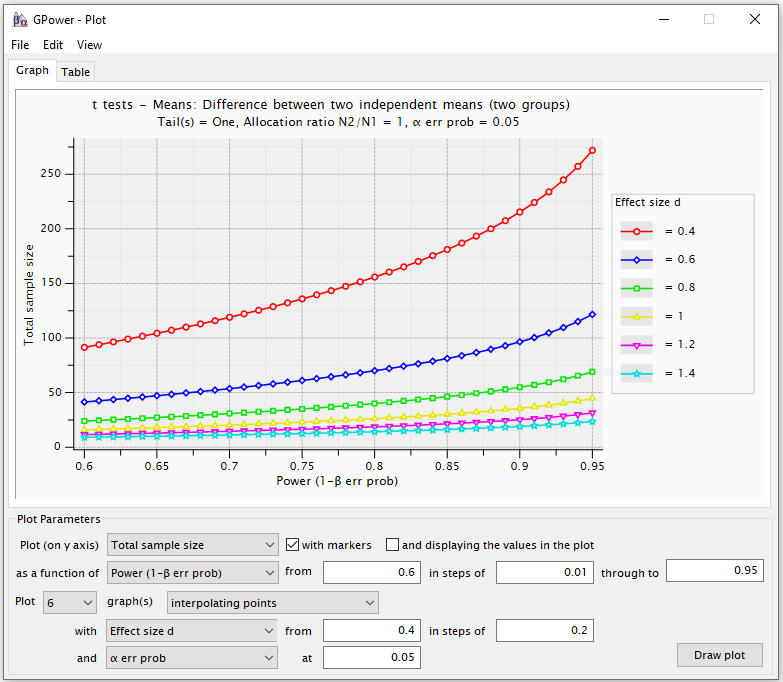

Chapter 10 Power Analysis
When you conduct null hypothesis significance testing (NHST), based on your data, your conclusion is to either reject or fail to reject the null hypothesis. Your conclusion may be correct or incorrect. When the null hypothesis is incorrectly rejected, you’ve made a Type I error. When the null hypothesis is incorrectly not rejected, you’ve made a Type II error. Formally, Type I error (\(\alpha\)) is the probability of rejecting the null hypothesis when it is true. Type I error is usually set at .05 (we are willing to be wrong 5 out of 100 times). Type II error (\(\beta\)) is the probability of failing to reject the null when it is false (saying that the groups don’t differ when they do).
Outcomes of hypothesis testing: 
Probabilities of outcomes of hypothesis testing: 
(1 − \(\beta\)) is called the statistical power of a test.
10.1 Components of Power Analysis
Statistical procedure
- t-tests (independent samples, correlations, and any other t-test),
- F-tests (ANOVAS, multiple correlation and regression, and any other F-test), and
- Chi2-tests (goodness of fit and contingency tables)
Specification of Null and Alternative Hypothesis
Nominal significance level \(\alpha\)
Desired power 1 − \(\beta\)
Effect size
Sample size n
10.2 Effect Sizes
Common effect sizes 
Determining Effect Sizes
- substantive knowledge
- findings from prior studies
- results from a pilot study
- common effect size convention (cf. Cohen, 1988)

10.3 Types of Power Analysis
A priori Power Analysis The necessary sample size is calculated as a function of user-specified significance level ( \(\alpha\)), statistical power, and the to-be-detected effect size.
Post-hoc Power Analysis The statistical power is computed as a function of the significance level ( \(\alpha\)), sample size (n), and the (population) effect size.
Sensitivity Analysis The required population effect size is computed as a function of the significance level ( \(\alpha\)), the power (1 − \(\beta\)), and sample size (n).
Compromise Analysis The critical cut-off value and the associated \(\alpha\) and \(\beta\) values are computed as a function of the desired
Criterion Analysis The required significance level ( \(\alpha\) is computed as a function of power, sample size (n), and population effect.
10.3.1 A priori power analysis
Steps for Sample Size Determination
- Specify statistical procedure (e.g., ANOVA, regression, etc.)
- Specify null- and alternative hypothesis (one- or two-sided testing).
- Specify alpha level and desired power (e.g., \(\alpha\) = 0.05, (1 – \(\beta\)) = 0.80)
- Specify desired effect size
10.3.2 Post-hoc power analysis
Steps for Power Determination
- Specify statistical procedure (e.g., ANOVA, regression, etc.)
- Specify null- and alternative hypothesis (one- or two-sided testing).
- Specify alpha level
- Specify sample size
- Estimate observed effect size
10.4 a Two-Tailed t Test for Independent Samples Power Example
In t tests for independent samples, the effect size is given by: \(d = {{(\mu_1 - \mu _2)} \over \sigma}\), where \(\sigma\) is the assumed common population standard deviation.
This population effect size is estimated by: \(\hat d = ({\bar x_1} - {\bar x_2})/s\), where \(\hat \sigma = s = \sqrt {{{({n_1} - 1)s_1^2 + ({n_2} - 1)s_2^2} \over {{n_1} + {n_2} - 2}}}\) is the estimate of the assumed common population standard deviation. An effect size of \(d\) = .2 is small, \(d\) = .5 is medium, and \(d\) = .8 is large. For a medium effect \(d\) = .5 and a sample size \(n\) = 15, we can see that as \(\alpha\) decreases, \(\beta\) increases, and statistical power decreases.
| \(\alpha\) | \(\beta\) | 1-\(\beta\) (Power) |
|---|---|---|
| 0.10 | 0.62 | 0.38 |
| 0.05 | 0.74 | 0.26 |
| 0.01 | 0.90 | 0.10 |
For a medium effect \(d\) = .5 and Type I error \(\alpha\) = 0.05, we can see that as the sample size increases, \(\beta\) decreases, and statistical power increases.
| \(n\) | \(\beta\) | 1-\(\beta\) (Power) |
|---|---|---|
| 10 | 0.81 | 0.19 |
| 50 | 0.30 | 0.70 |
| 100 | 0.06 | 0.94 |
With a sample size \(n\) = 75 and Type I error \(\alpha\) = 0.05, we can see that as the effect size increases, \(\beta\) decreases, and statistical power increases.
| \(d\) | \(\beta\) | 1-\(\beta\) (Power) |
|---|---|---|
| 0.2 | 0.77 | 0.23 |
| 0.5 | 0.14 | 0.86 |
| 0.8 | 0.00 | 1.00 |
10.5 Software
- **G*Power** performs high-precision statistical power analyses for the most common statistical tests in behavioral research including t tests (independent samples, correlations, and any other t-test), F-tests (ANOVAS, multiple correlation and regression, and any other F-test), and Chi2-tests (goodness of fit and contingency tables). It can be used to conduct all five types of power analysis (a priori, Post-hoc, sensitivity, compromise, and criterion).


pwrR package
Simply google “power analysis calculator,” you will see many tools.